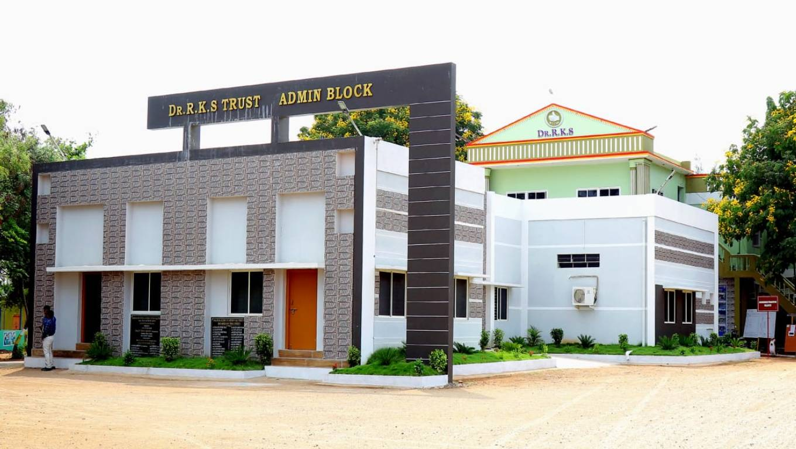

DR.RKS COLLEGE OF ARTS AND SCIENCE
(Affiliated by ANNAMALAI University)
(Accrediated by NAAC)
KALLAKURICHI

DR.R.K.Shanmugam Educational Trust was founded during the centenary celebration of his birth to prepetuate the memory of the late DR.R.K.Shanmugam the first finance minister of independent India and former Vice chancellor of Annamalai University. The age long dream of the people of Kallakurichi thus came true when DR.R.K.Shanmugam College of Arts and Science was established. The college started functioning from 1st July 1997. Original Affiliated to the University of Madras after bifurcation the college now stands Permanently Affiliated to Thiruvalluvar University, Vellore. It is accredited by NAAC New Delhi and recognized by UGC under section 2(f) & 12(B) of UGC act 1956. The placement opportunities start from the time you join such future-thinking programmes. What better then, will be an opportunity, than mentoring yourself at an institution sponsored by an Industry.
Spacious, fully- furnished class rooms with neat desks and benches, light and fan facilities are being maintained in a proper manner, providing a clean and healthy environment conducive to study.
"Knowledge is power and library is the powerhouse". Books are the best teachers and counselors. To synchronize theory and practice, the journals, magazines and newspapers are very helpful. A Library is a collection of information, resources and services, organized for use, and maintained by a responsible body. Libraries inform the public of what materials are available in their collections and how to access that information. A modern Library provides educational resources to students and teachers through publications and other electronic media. The library is spanned in a 3000 sqft building with air-conditioning facility and it can accommodate 350 students for reading. The library is computerized and is well equipped with more than 7000 volumes of books various disciplines, 55 magazines and periodicals. The college has invested more than Rs 35 lakhs for the library in the last 4 years for the purchase of the books. The college spends a minimum of Rs 5 lakhs each year on the books and Rs 2 lakhs for subscribing the journals and periodicals.
Hostels for students reflect corporate fitness in design and functionality, with separate infrastructure for men and women. The campus hostels are again an opportunity for cross integration of student learning with corporate life where the student is able to share knowledge and learn from his mentors the workplace competencies. We have separate hostels for men and women viz. KGiSL-Boys Hostel & KGiSL-Girls Hostel.
RKS Placement and Training Cell have moved from strength to strength and our college has emerged as a campus to recruit the fresh talent nurtured. In the journey towards excellence, many milestones were also set by the Department of Placements in terms of "Quality and Quantity ". The excellent infrastructure facilitates different activities of placement like pre-placement training, and talks. The consistent placement record illustrates the commitment of the college towards the growth and development of the students. Regular campus interviews are conducted every year. Students have no trouble finding coveted positions in reputed corporate and business houses that visit the campus every year, offering an excellent salary package on par.